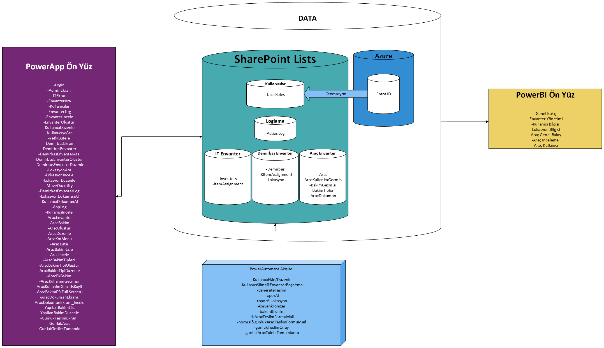

Envanter Yönetim Uygulaması - Yönetici Özeti¶
Versiyon: 1.0
Tarih: 18 Eylül 2025
Hazırlayan: Oğuzhan Akçalı
Stratejik Değer Özeti¶
Envanter Yönetim Uygulaması, ESRI Türkiye'nin varlık yönetimini dijitalleştirerek:
- Maliyet Optimizasyonu: Manuel takip süreçlerini %70 azaltır
- Veri Doğruluğu: Merkezi veritabanı ile hata oranını %95 düşürür
- Karar Destek: PowerBI dashboard'ları ile gerçek zamanlı analiz sağlar
- Uyum: Kurumsal güvenlik standartlarına tam uyumlu
İş Birimleri ve Kapsam¶
| Birim | Kapsam | Ana Fayda |
|---|---|---|
| IT | 1500+ cihaz takibi | Zimmet hatalarını önler |
| Lojistik | 300+ demirbaş | Ofis yerleşim optimizasyonu |
| Filo Yönetimi | 25+ araç | KM ve bakım maliyet kontrolü |
Teknoloji Yığını - Neden Power Platform?¶
- Hızlı Geliştirme: Low-Code&No-Code platformu
- Düşük Maliyet: Lisans bazlı, IT ekibi bağımlılığı yok
- Ölçeklenebilir: 10.000+ kayda kadar performans garantisi
- Güvenlik: Azure AD entegrasyonu, row-level security
Giriş ve Genel Bakış¶
Uygulamanın Amacı¶
Envanter Yönetim Uygulaması, şirketimizin IT eşyaları, mobilya ve araç envanterini etkin bir şekilde takip etmek ve yönetmek için geliştirilmiştir. İlk olarak IT biriminin teknolojik eşyalarını (örneğin, zimmetli cihazlar, yazıcılar, televizyonlar) izlemek amacıyla tasarlanmış, ardından mobilya ve araç modülleri eklenerek kapsamı genişletilmiştir.
Bu uygulama, envanter verilerinin merkezi bir yerde toplanmasını, kullanıcıların veri girişi yapmasını ve yöneticilerin analiz raporları oluşturmasını sağlar. Amaç, manuel süreçleri otomatikleştirerek zaman tasarrufu sağlamak ve veri doğruluğunu artırmaktır.
Kapsam ve Modüller¶
Uygulama, üç ana modülü kapsar:
- IT Eşyaları Modülü: Zimmetli cihazlardan (laptop, telefon) ofis ekipmanlarına (yazıcı, televizyon) kadar tüm teknolojik varlıkların takibi.
- Mobilya Modülü: Ofis mobilyalarının (masa, sandalye) konum ve durum takibi, genellikle statik verilerle.
- Araç Modülü: Şirket araçlarının (plaka, marka/model, KM, bakım geçmişi) ve kullanıcı bazlı kullanım kayıtlarının yönetimi (örneğin, ilk teslim, günlük kullanım).
Her modül, veri girişi (PowerApps), otomasyon (PowerAutomate) ve analiz (PowerBI) işlevleriyle entegredir.
Platformlar ve Teknolojiler¶
Uygulama, Microsoft Power Platform üzerine inşa edilmiştir:
- SharePoint Online: Veritabanı olarak kullanılır; tüm envanter verileri SharePoint listelerinde saklanır (örneğin,
AracKullanimGecmisilistesi). - PowerApps: Kullanıcı arayüzü sağlar; formlar, listeler ve veri giriş ekranları içerir (örneğin, araç kullanım formu).
- PowerAutomate: Otomasyon akışları, örneğin yeni araç kullanımı kaydedildiğinde e-posta bildirimi gönderir.
- PowerBI: Analiz ve raporlama için dashboard'lar sunar (örneğin, kullanıcı bazlı KM analizleri, araç kullanım geçmişi grafikleri).
Erişim ve Kullanım¶
Uygulamaya Microsoft 365 hesabıyla erişilir:
- PowerApps: https://envanter.esri.com.tr/ üzerinden veya Microsoft Teams uygulamasından.
- PowerBI Dashboard'ları: https://app.powerbi.com/links/VRpX1tf7ti?ctid=1f580eff-987d-424f-a49a-8baef99ca40a&pbi_source=linkShare üzerinden erişilir.
- Kullanıcı Grupları: IT ekibi (cihaz yönetimi), yöneticiler (araç/mobilya takibi), HR (kullanıcı bazlı analizler).
Mimari Genel Bakış¶
Aşağıdaki diyagram, sistemin veri akışını özetler:
 Şekil 1: Envanter Yönetim Sistemi Veri Akışı
Kullanıcı Erişimi¶
Erişim için birden fazla seçenek bulunur ve kişisel tercihinize en uygun olanı seçebilirsiniz.
Web Browser¶
Tarayıcıdan ESRI domainli linki ya da Power Platform üzerinden My Apps bölümünden seçebilirsiniz:
Teams¶
Eğer uygulama size tanımlı ise Microsoft Teams'dan grup sohbetinize yeni sekme olarak ekleyebilirsiniz.
Adımlar:¶
- Grup sohbetinde (+) butonuna tıklayın

- Gelen pencerede PowerApps seçin

- Uygulamayı seçip Save deyin

Uygulamaya Giriş¶
- Uygulama ilk açıldığında sizden kullandığı özellikler için istediği yetkileri onaylayınız.

Güncel Versiyonda İstenilen Yetkiler¶
| Yetki | Açıklama |
|---|---|
| SharePoint | Database olarak SharePoint listesi kullanıldığı için Envanter Uygulaması SharePoint sayfasında tüm fonksiyonlar kullanılmaktadır. |
| Word Online (Business) | Otomatik form ve rapor doldurma özellikleri için kullanılmaktadır. |
| OneDrive for Business | Otomatik form ve rapor doldurma özellikleri için kullanılmaktadır. |
| Office 365 Outlook | Otomatik mail gönderim süreçleri için kullanılmaktadır. |
| Standart Approvals | İşlemle alakalı ilgili kişilerin onay verme sürecini başlatmak için kullanılmaktadır. |
| Office 365 Users | Kullanıcıların detay verilerini çekmek için kullanılmaktadır. |